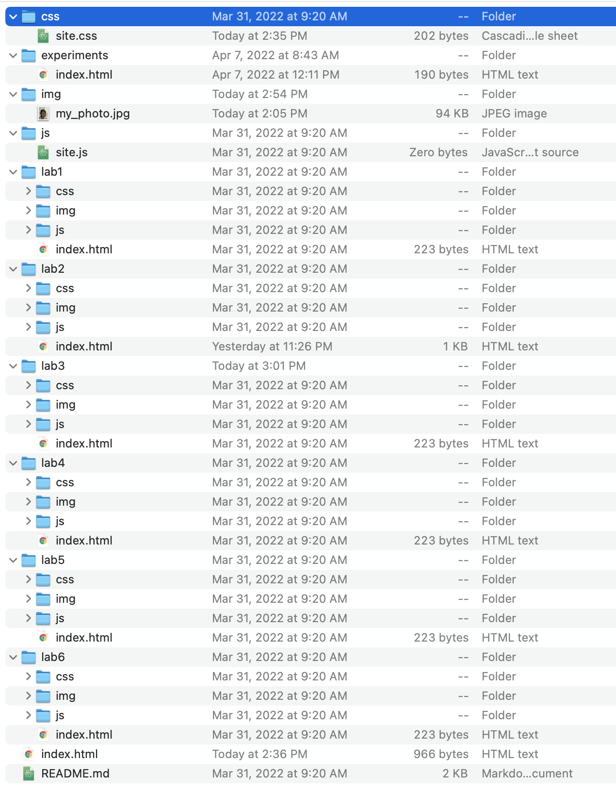

The purpose and idea of this lab was to allow the students to understand what the local file structure consists of, as well as to add and edit index.html files.
At first, my partner Laiy and I weren't sure how we can include an image through our local port. However, with some help from Google, we were able to figure it out; you had to drag the photo into the img folder.
Things went along pretty smoothly! We were able to get the project successfully done!
